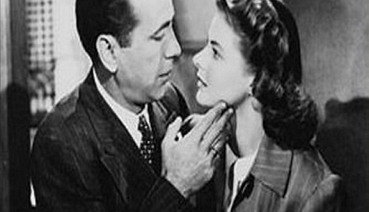
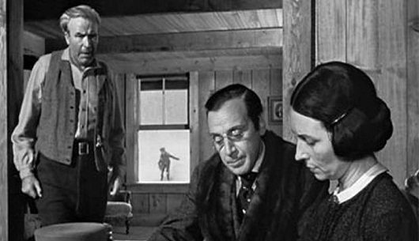
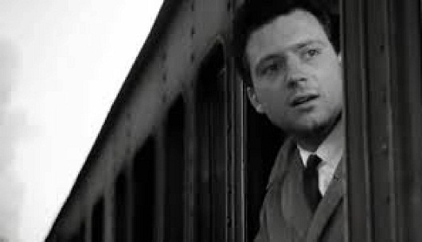
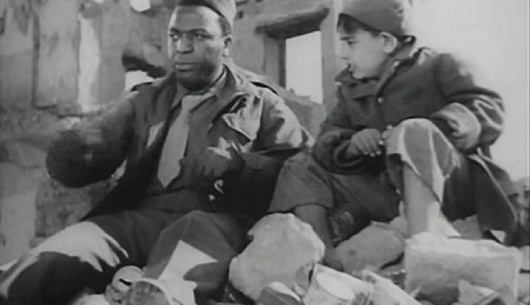
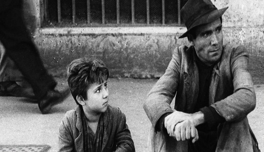
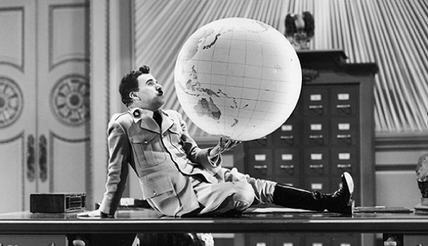

|
      |
Nem todo escritor é um roteirista, mas todo roteirista é um escritor! Roteiro não é literatura, não é um conto, não é uma peça de teatro, não é uma matéria jornalística, não é um texto em prosa. Ele bebe um pouco dessas fontes, porém, o roteiro possui uma linguagem única, recheada de particularidades. Existem muitas definições do que seja um roteiro. Lyrio Guimarães em seu manual “Primeiro Traço” ressalta: “ É importante que retenhamos a ideia de que o roteiro conta a história do filme, através da descrição de suas imagens e sons, e fornece todos os dados necessários para que os vários membros da equipe técnica possam desenvolver seus respectivos trabalhos. Ou seja, tudo mais que será feito depois, com a participação, colaboração e discussão do diretor e de outros membros da equipe. Mas os conceitos básicos estarão no roteiro. Não cabe, também, ao roteirista ensinar ao diretor ou a qualquer membro da equipe como realizar seu trabalho ou como produzir qualquer efeito – basta que indique o conceito do efeito a ser realizado, descrito em forma simples e direta, sem excessos literários. ”. Em seu manual, Guimarães nos mostra as definições de outros mestres: “Jean Claude Carriere diz que “o roteiro representa um estado transitório, uma forma passageira destinada a se metamorfosear e a desaparecer, como a larva ao se transformar em borboleta. Quando o filme existe, da larva resta apenas uma pele seca, de agora em diante inútil, estritamente condenada à poeira’. Syd Field dedica um capítulo inteiro à definição do roteiro, em grande parte dele, explicando o que não é um roteiro. Num certo momento ele diz que “o roteiro é uma história contada em imagens, diálogos e descrições, localizada no contexto da estrutura dramática”. O roteirista e romancista Marçal Aquino define o que para ele seja um roteiro: “O roteiro é uma peça meramente informativa que deve se limitar a fornecer dados para o coletivo, para a equipe que vai trabalhar no filme e criar a partir desse texto. Roteiro não é um produto final, é uma espécie de molde, no qual você aplica uma resina, retira o produto e o molde permanece lá. Mas você não exibe o molde. Um bom roteiro é uma peça de transição, não deve ter ambições literárias, nem de direção”. São muitas as definições espalhadas por aí, no fim, todas dizem a mesma coisa. E eles estão certos. Mas escrever roteiro é muito mais do que uma linguagem técnica, embora ela seja extremamente importante. Existe também o outro lado da escrita cinematográfica. Através do cinema é possível mostrar os comportamentos e as ações de personagens; a verdadeira essência do ser humano, a alma. É possível também mostrar, metaforicamente, realidades e conflitos humanos, sociais, filosóficos e políticos. Existe uma gama de possibilidades que acompanham a técnica da escrita cinematográfica. Ao escrever um roteiro, você está transformando o seu público em um espião da sua estória. O público torna-se um observador da vida dos personagens e de seus contextos. Exige técnica, criatividade e conhecimento de causa. O roteiro é o produto mais importante na realização de um filme. O que faz o Diretor sem o roteiro em mãos? O que faz um Diretor de Fotografia sem o roteiro? O que faz um Diretor de Arte sem o roteiro? Como que os atores podem conhecer os seus personagens sem o roteiro? O que faz toda a equipe de um filme sem o roteiro? NADA! Todos os profissionais de uma equipe cinematográfica ou de TV dependem do roteiro. O Roteirista É O CARA, É O HERÓI como é apresentado na abertura do filme “Deadpool” de Tim Miller. O Roteirista é o Todo Poderoso no mundo do cinema! Embora não seja reconhecido como tal. Com tanto poder em mãos, um roteirista não pode fazer qualquer coisa, de qualquer jeito, à sua maneira. A arte de escrever para o cinema ou para a TV é uma profissão, e como toda profissão, é necessário que haja preparo e muito estudo. Além de muita criatividade e técnica. Escrever roteiro também exige conhecimento histórico e toda sua bagagem intelectual, cultural e vivência social ou de observador da sociedade, do comportamento humano e da vida! Robert Mckee diz em seu livro “Story” que: ” Uma “boa estória” significa algo que vale a pena dizer e que o mundo queira ouvir. O que dizer você terá de descobrir sozinho. Começa com talento. Você precisa nascer com o poder criativo para juntar as ideias de uma maneira que ninguém nunca sonhou. Depois, você precisa trazer ao trabalho uma visão dirigida por um novo panorama sobre a natureza e a sociedade, acasalada com um profundo conhecimento de seus personagens e seu mundo. Todos os roteiristas precisam entender a relação da estória com a vida: a estória é uma metáfora para a vida. Além da literatura de Syd Field, a de Robert Mckee é obrigatória para todos os aspirantes à roteirista. Ele explica com riqueza de detalhes o quão o buraco da escrita cinematográfica é muito mais embaixo do que muitos imaginam. Meus alunos chegaram até mim afoitos pela escrita do roteiro. Mas o roteiro é só o resultado de um longo caminho que deve ser percorrido antes dele. A construção dos Pré-Elementos do Roteiro é tão importante quanto o próprio roteiro, como por exemplo a criação da Story Line, da Sinopse, do Perfil dos Personagens , da Estrutura, do argumento e muita pesquisa! É durante esse processo, que antecipa a escrita cinematográfica, que temos a chance de construir um forte alicerce para escrever um bom roteiro, ou seja, existe muito trabalho árduo embaixo dos caracóis dos cabelos da técnica da escrita cinematográfica. Sendo assim, podemos dizer que roteiro é uma soma: da escrita técnica própria do roteiro cinematográfico, da arte de contar uma estória dramaturgicamente, através de imagens e sons e da atenta observação de si, dos outros, das realidades que nos cerca e do mundo. Não se engane, a escrita de um bom roteiro cinematográfico e televisivo é muito complexa. É hardwork! Porém, extremamente prazerosa para os que amam o mundo da escrita |
|---|